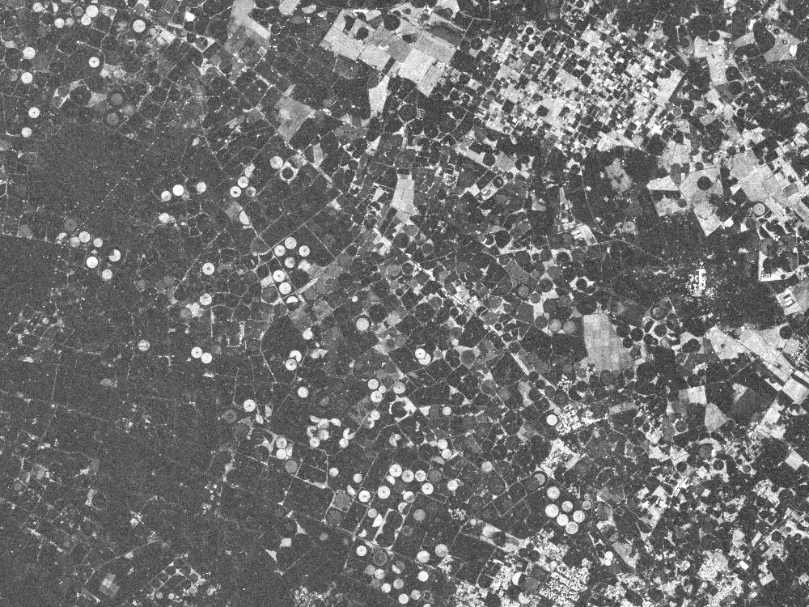
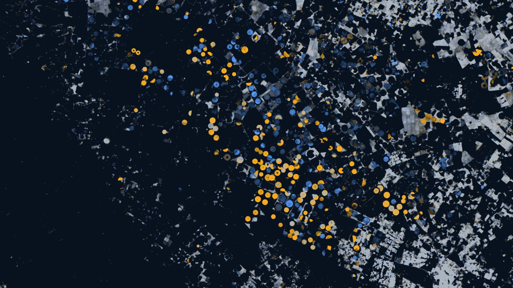

-
01
The problem
Saudi farms pump groundwater from aquifers that do not refill, and much of that pumping is unmetered. The national waste inventory grades its farm-residue figures low confidence.
Without a field-by-field record of what is farmed each season, it is hard to say where the water goes, or how much straw and how many palm fronds there are to use.
- Groundwater used by farms each year, MEWA's official estimate for 2024
- –billion m³
- All farms. The radar figure further down covers only the mapped fields it saw farmed.
- Agricultural waste a year in MWAN's national waste inventory
- –Mt
- Graded low confidence.
-
02
What the radar sees
NISAR passes every 12 days, day or night, whatever the weather. A crop canopy sends the cross-polarised L‑band signal back brightly; bare ground stays dark. A field counts as farmed in a season when its brightness rises clearly above the same scene's bare desert.
Field outlines come from Sentinel‑2; the radar decides which fields were farmed in each season.

NISAR L‑band HV backscatter over the Qassim pivot cluster, 27 October 2026, about 40 km across. Bright circles are pivots with a crop canopy, dark is bare ground; towns show bright too. The farmed area by season pattern, 2025/26
-
03
What it finds
Central estimates for the fields the radar saw farmed. Under each figure, a scale shows what moves it: the factors at their low and high bounds, the radar threshold moved looser and stricter, and both at once. Biochar is a set of separate cases, not a range.
How to read the ranges
Farmed area
–ha in 2025/26
Radar only, for the mapped fields in the regions where it passed its quality check. Sentinel‑2 can fill what the radar missed, as a separate tier.
Irrigation water pumped
–billion m³ / year
Likely an underestimate: fields the radar did not detect, and seasons it did not observe, get no water (radar false alarms and the derived summer-crop depth push the other way).
Pumping electricity
–TWh / year
Modelled from pumped water and depth to groundwater, not metered.
Why it is likely a lower bound
Biochar carbon removal
Mt CO₂ a year, net of transport: a technical potential
These are hypothetical sites from a siting model; no such plants exist. The plants counted below are modelled biochar plant sites, none built or planned. The cement plants that could take the char are existing cement plants (real facilities).
Not credited: a hypothetical upper bound, kept out of the cases above
- A technical potential: stored char carbon × the Puro.earth 2025 soil persistence model (also used for char in cement), minus truck emissions only; production and embodied emissions and leakage are not subtracted.
- The rows are separate cases, not a range.
What each row counts
-
04
What it changes
A field-by-field record that NISAR's repeat passes can keep current gives three decisions something to measure against.
-
–ha
of year-round fields in the halt regions, radar 2025/26
A baseline for the fodder halt
MEWA is halting perennial fodder cultivation in the sedimentary-shelf regions. The radar's record of year-round fields there is a field-level baseline for screening, not enforcement.
The baseline, field by field -
–MW
average irrigation pumping load, June–September
Grid planning
Irrigation pumping runs through the summer, on top of the air-conditioning peak. The estimate is modelled, not metered.
Pumping by region on the map -
–kt straw
–kt fronds
wheat straw and palm fronds a year (dry), on the mapped fields
A check on the residue inventory
The national waste inventory grades its agricultural waste figures low confidence. The radar record gives wheat straw and palm fronds field by field (farmed area × residue factors): a partial check on those figures, and the feed for biochar.
Residue stream by stream
-
NASA Space Apps 2026, Dancing with the SARs
SkyMeter reads Saudi farm fields from orbit, season by season.
NISAR's L‑band radar sees through cloud, dust and darkness. SkyMeter uses it to check, field by field, which fields are farmed each season, what they cost in irrigation water and pumping energy, and what residue they leave for biochar.
–ha
farmed in 2025/26, as the NISAR radar sees it
Field outlines come from Sentinel‑2; the radar decides which fields were farmed in each season.
The headline figures could not load. The pages linked below may still work; try reloading.

NISAR L‑band HV, Qassim pivots west of Buraydah, about 53 by 30 km, 2025/26
- Winter only, 6 dates
- Summer only, 10 dates
- Both seasons
About this image
False-colour composite of NISAR L‑band HV radar over the Qassim centre-pivot fields west of Buraydah, about 53 by 30 km with north up: amber marks ground bright only on the six winter dates (1 November to 31 December 2025), blue only on the ten summer dates (29 June to 27 October 2026), pale grey ground bright in both seasons (year-round crops, palm groves and buildings), and dark is bare ground.
How sure is the radar?
Each page checks the radar's farmed or not-farmed calls against Sentinel‑2 greenness. Sentinel‑2 also outlines the fields, so these are consistency checks, not an independent ground truth.